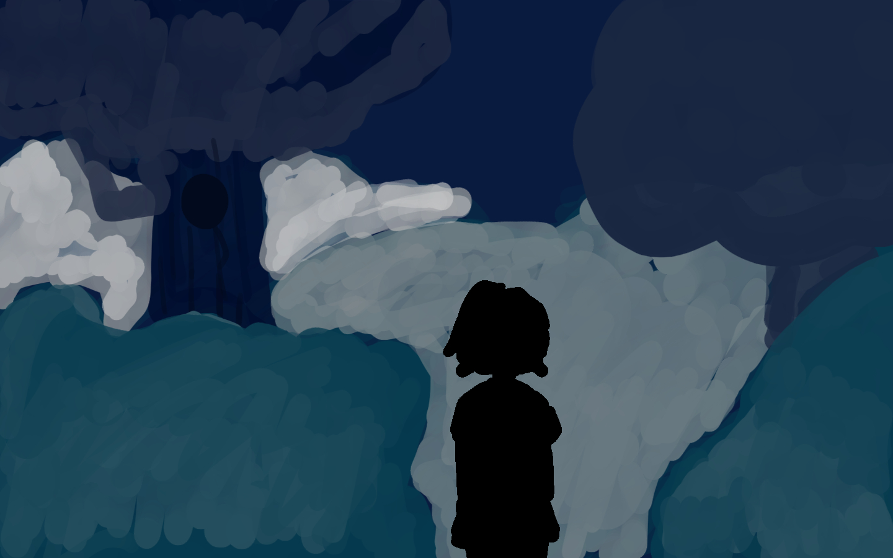

WHILE GOING ON AN EVENING STROLL YOU MANAGED TO SOMEHOW GET LOST AND STRANDED IN THE MIDDLE OF NOWHERE AT THE MIDDLE OF THE NIGHT. WHILE PANICKED YOU COME ACROSS A MYSTERIOS FOREST, JUST LOOKING AT IT GIVES YOU THE CHILLS. IT FEELS AS IF YOU ARE BEING WATCHED WHENEVER YOU LOOK AT IT. HOWEVER, FROM DEEP INSIDE THE FOREST YOU CAN HEAR THE FAINT SOUND OF TREASURE, THAT IS JUST ASKING TO BE STOLEN BY YOU.
